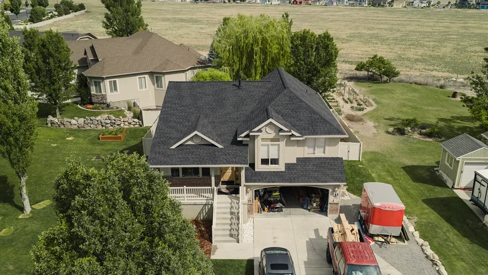

Severe weather can damage your roof when you least expect it. High winds, hail, falling branches, and flying debris all have the potential to compromise your roofing system, even if the damage isn’t immediately visible. At Aesthetic Roofing, we provide professional storm damage roof repair to help homeowners restore their roofs quickly and protect their homes from further damage.
Our experienced team proudly serves homeowners throughout Utah County, Box Elder County, and Morgan County, as well as communities across Northern Utah. Whether you’re dealing with missing shingles, a roof leak, or extensive storm roof damage, we’ll thoroughly inspect your roof and recommend the right solution for your home.
Common Types of Roof Storm Damage
Not every storm affects a roof the same way. The type and severity of the damage often depend on the weather conditions, your roofing material, and the age of your roof.
Some of the most common types of roof storm damage include:
- Roof hail damage: Hail can bruise, crack, or loosen shingles, reducing their ability to protect your home from moisture.
- Roof wind damage: Strong winds can lift shingles, damage flashing, and expose vulnerable areas of your roof.
- Roof tree damage: Falling limbs or entire trees can puncture the roof, damage structural components, and create immediate safety concerns.
- Roof debris damage: Flying debris can crack roofing materials, dent metal components, or damage vents and flashing.
- Missing shingles: High winds frequently remove shingles, leaving the underlying roofing system exposed to water intrusion.
- Shingle damage: Cracked, lifted, or torn shingles may appear minor but can quickly lead to leaks if left unrepaired.
Even if your roof looks fine from the ground, hidden damage can worsen over time. That’s why it’s important to have your roof professionally evaluated after severe weather.
Signs Your Roof Has Storm Damage
Some storm damage is obvious, while other problems develop slowly over the weeks and months following severe weather.
You may need a storm roof repair if you notice:
- Water stains on ceilings or walls
- Missing or lifted shingles
- Granules collecting in your gutters or around your home
- Bent or damaged flashing
- Debris resting on your roof
- Sagging roof sections
- Active roof leaks during or after rain
If you’re experiencing a leak, don’t wait for the damage to spread. Prompt leaky roof repair can help prevent additional damage to your insulation, drywall, and structural framing.
Our Storm Damage Roof Repair Process
After a storm, homeowners need answers they can trust. Our goal is to provide clear recommendations based on your roof’s actual condition, not unnecessary repairs or replacements.
Our process includes:
- A thorough inspection of the roofing system
- Identification of visible and hidden storm damage
- Documentation of damaged roofing components
- Honest recommendations for repair or replacement
- Quality workmanship using premium roofing materials
Whether you need minor repairs or more extensive restoration, we’ll explain your options clearly so you can make an informed decision about protecting your home.
Storm Damage Repairs for Asphalt Shingle Roofs
Asphalt shingles are durable, but they remain vulnerable to hail, wind, and impact damage during severe weather. Prompt repairs help prevent moisture intrusion and extend the life of your roof.
Our asphalt shingle roof repair services address:
- Missing shingles.
- Lifted or loose shingles.
- Cracked or broken shingles.
- Hail damage.
- Wind damage.
- Flashing issues caused by storms.
If repairs can safely restore your roof, we’ll recommend that option. If the damage is too extensive, we’ll explain why replacement may provide greater long-term value.
When Storm Damage Requires Roof Replacement
Not every storm results in a complete roof replacement. However, widespread damage, aging roofing materials, or multiple compromised areas may make repairs less practical.
A storm roof replacement may be recommended when:
- Large sections of the roof have sustained hail or wind damage.
- Structural components have been compromised.
- The roof has experienced significant tree impact.
- Repeated repairs would no longer be cost-effective.
- Your roof is already nearing the end of its expected lifespan.
If replacement is the best solution, we’ll guide you through your options for a new roof and help you choose materials that provide lasting protection and curb appeal.
Storms can also damage your home’s drainage system. If your gutters have been bent, pulled away from the roofline, or damaged by falling debris, we also provide local gutter replacement services to help restore proper water management around your home.
Why Homeowners Trust Aesthetic Roofing After Storms
Storm damage is stressful enough without having to wonder who to trust. At Aesthetic Roofing, we’re committed to helping homeowners make confident decisions with honest assessments and dependable workmanship.
Homeowners choose our team because we:
- Provide honest recommendations. We’ll recommend repairs whenever they’re the right solution, rather than automatically suggesting a replacement.
- Respond with urgency. Addressing storm damage quickly helps minimize the risk of additional water intrusion and structural damage.
- Deliver quality workmanship. As a GAF Master Elite® contractor, we follow proven installation and repair practices that meet the highest industry standards.
- Focus on long-term protection. Our goal isn’t simply fixing visible damage. Instead, we focus on restoring the integrity of your entire roofing system.
- Serve Northern Utah year-round. We’re a local company that stands behind our work long after the storm has passed.

Schedule Your Storm Damage Roof Inspection
If your home has recently experienced hail, high winds, falling branches, or flying debris, don’t wait for small problems to become expensive repairs. Aesthetic Roofing proudly provides roof leak repair for homeowners throughout Utah County, Box Elder County, Morgan County, and surrounding Northern Utah communities.
Contact Aesthetic Roofing today to schedule your storm damage inspection and learn the best way to restore your roof and protect your home